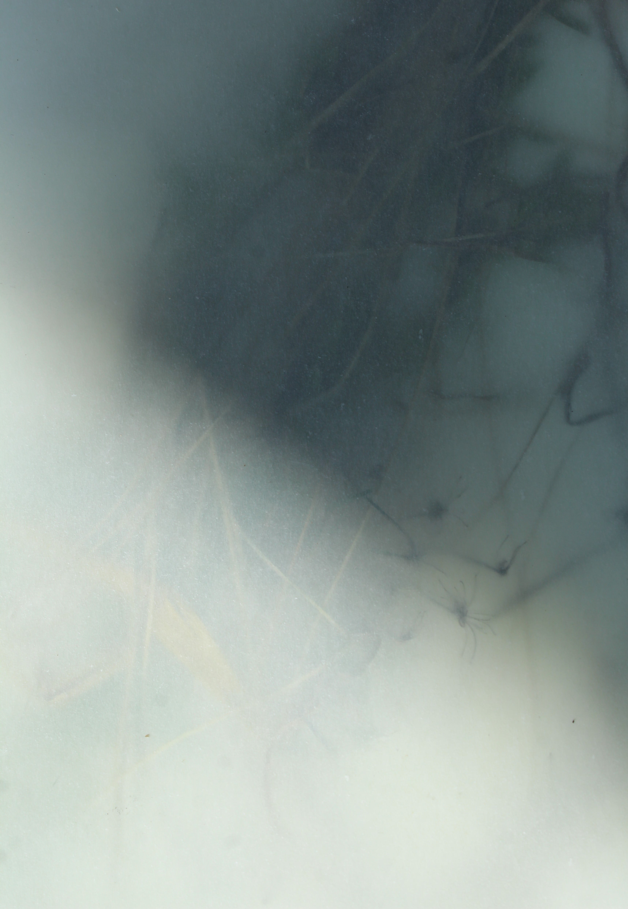
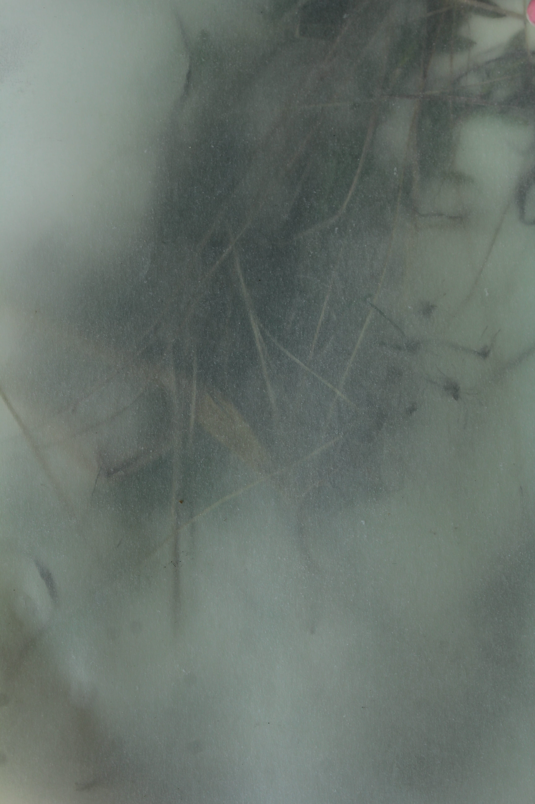
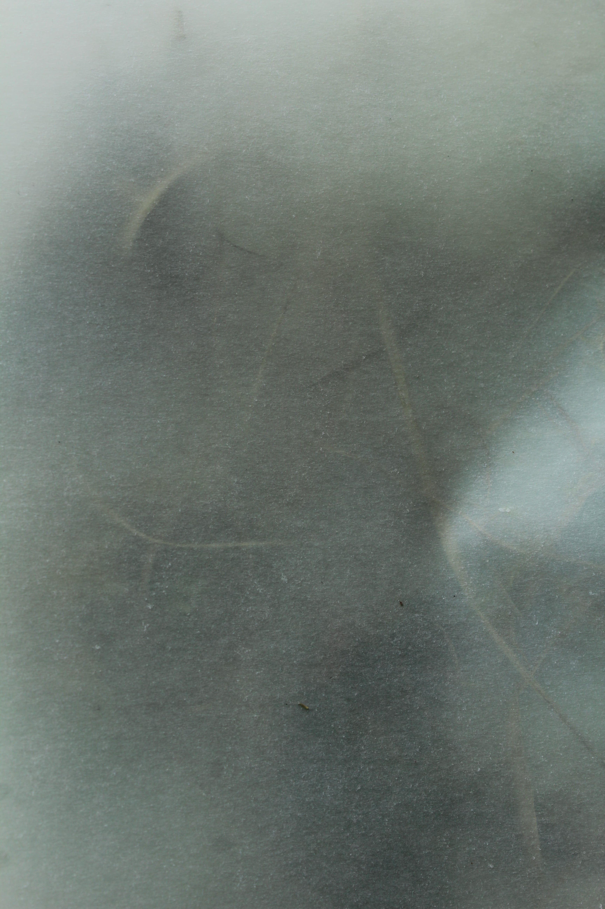
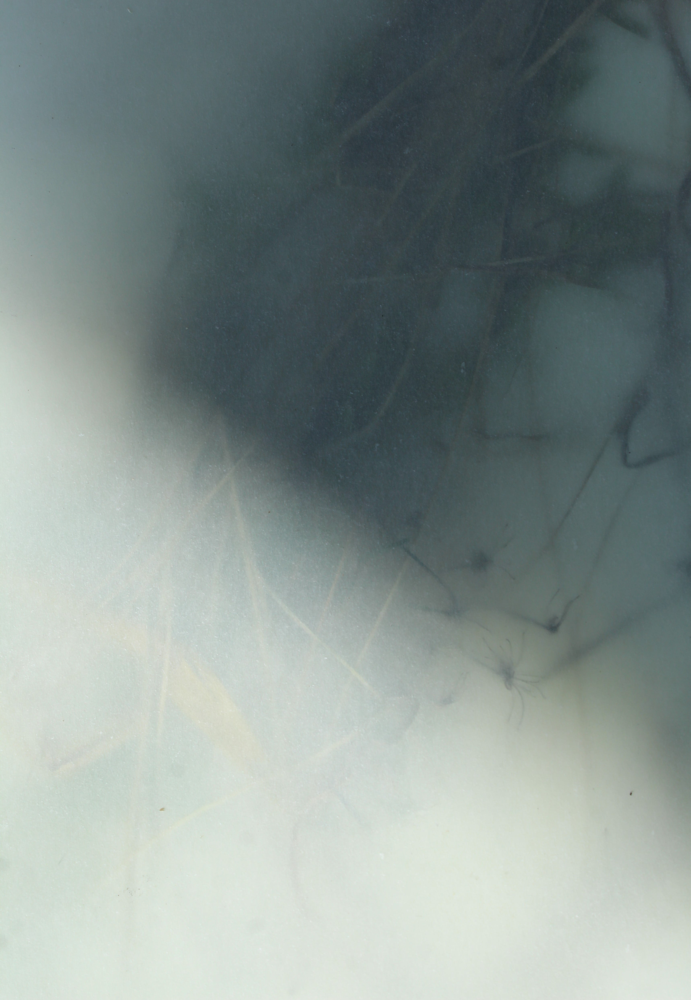
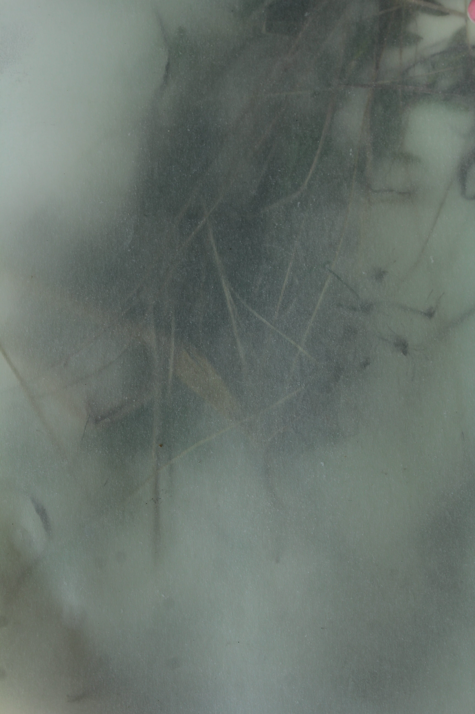
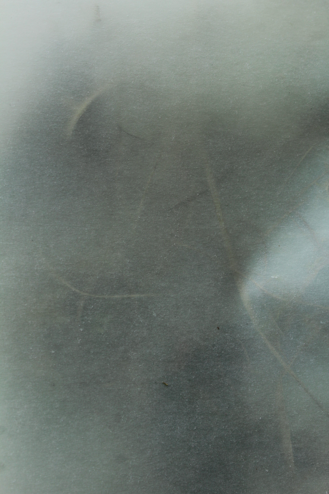
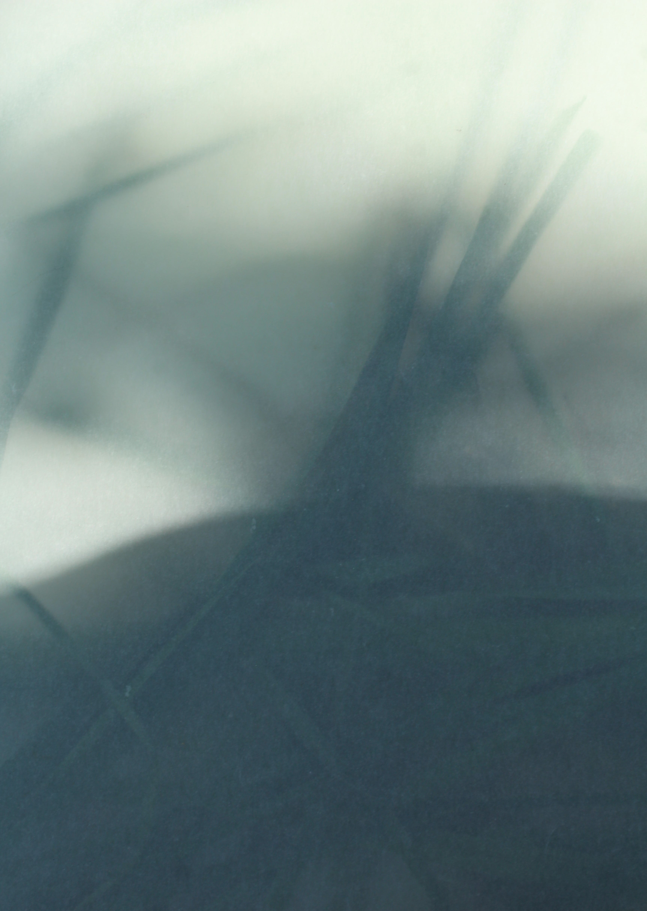
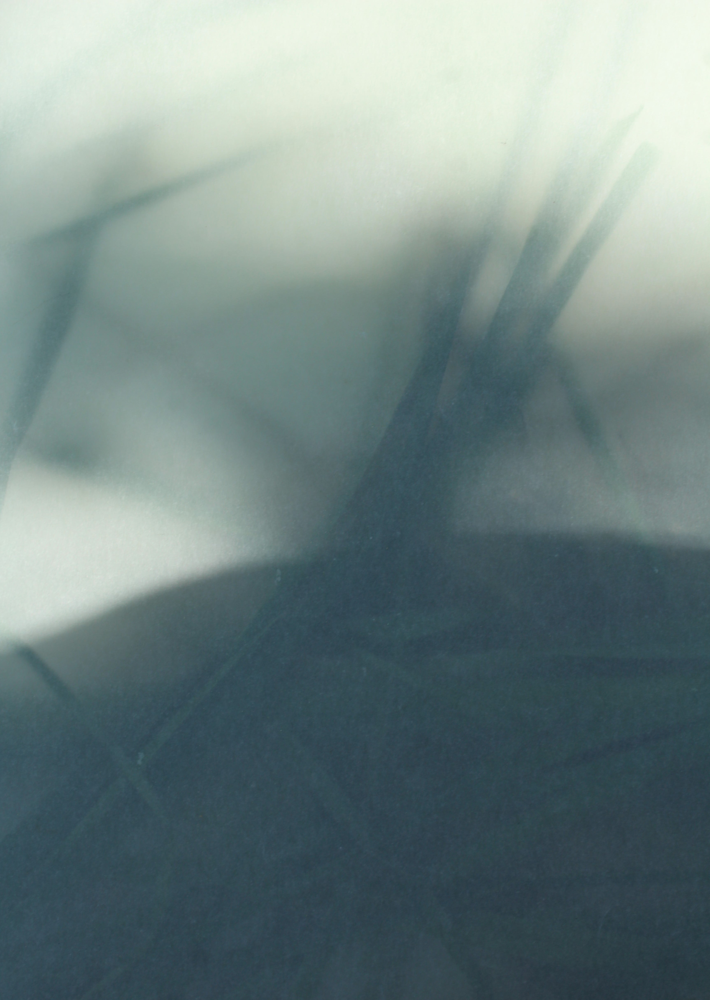

Nature 2020
 





 

fotografia, 1000 × 700 mm, 2020
Témou práce je Nature 2020. Zvolila som si fotografiu a prácu
s rastlinami. Keďže sa príroda stala mojím najväčším útočiskom
a trávila som tam svoj voľný čas využila som ju ako matricu. Fotografie vznikali vrstvením rastlín, trávy,
konárov, slamy, všetko čo som počas prechádzky našla som zhromaždila, vrstvila a prekrývala prehliadanými
papiermi. Bola to pre mňa terapia, pretože som sa zoznámila s rôznymi materiálmi, začala som ich vnímať,
pozorovala som svetlo, ktoré vytváralo kompozície, tiene, ktoré sa hýbali zo strany na stranu. Prinieslo mi to
pokoj, zabudla som na to, čo sa vo svete deje. Príroda je pre človeka útočiskom, zabudne na problémy, odreaguje
sa a vyčistí si hlavu alebo príde na nové nápady, ktoré neskôr zrealizuje.